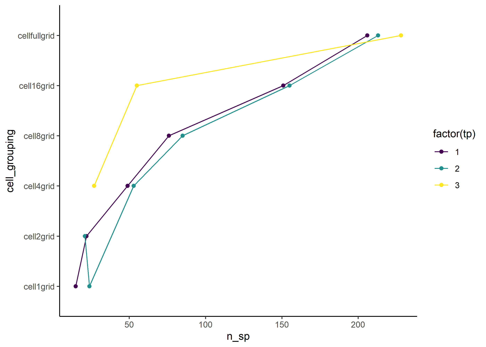
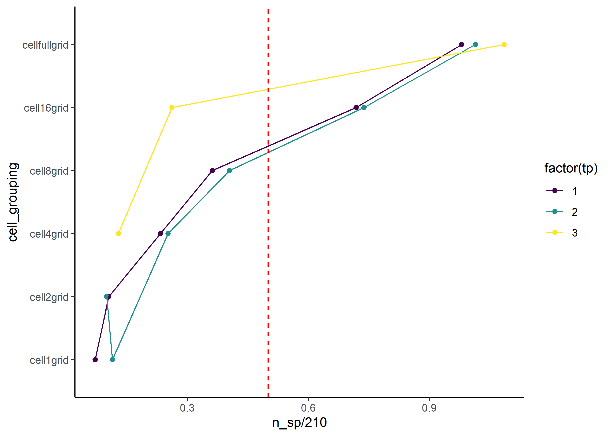
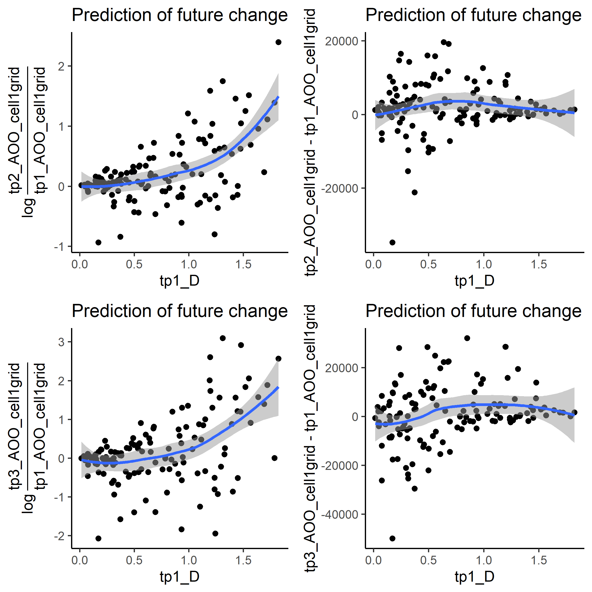

used (Mb) gc trigger (Mb) max used (Mb)
Ncells 576317 30.8 1316410 70.4 660420 35.3
Vcells 1053953 8.1 8388608 64.0 1770142 13.6
rm(list=ls())library(dplyr)
Attaching package: 'dplyr'
The following objects are masked from 'package:stats':
filter, lag
The following objects are masked from 'package:base':
intersect, setdiff, setequal, union
library(sf)
Linking to GEOS 3.11.2, GDAL 3.7.2, PROJ 9.3.0; sf_use_s2() is TRUE
library(tidyr)library(ggplot2)library(viridis)
Loading required package: viridisLite
library(AICcmodavg)
# folder path to atlas datasource_path <-"c:/Users/wolke/OneDrive - CZU v Praze/Datasets/Processed/Atlases/Replicated/Birds_Atlas_Czechia/"# folder path to output folderout_path <-"c:/Users/wolke/OneDrive - CZU v Praze/Dokumenty/GitHub/BEAST_General_Procedures/Project_Frieda/out/"# create path to read in data and grids from variablesdata_path <-paste0(source_path,"Birds_Atlas_Czechia_beast_data.rds")grid_path <-paste0(source_path,"Birds_Atlas_Czechia_grid.gpkg") # save names of layers from file (needed to read them in):layers <-st_layers(grid_path)$name# Define the desired order of factor levelsdesired_levels <-factor(layers, ordered = T, levels =c("cell1grid", "cell2grid", "cell4grid", "cell8grid", "cell16grid", "cellfullgrid"))
Data
# Species datapresence_data <-readRDS(data_path)## sort the cell groupings ascendingpresence_data <- presence_data %>%mutate(cell_grouping =factor(cell_grouping, levels = desired_levels))## add column for time period (tp)start_times <-sort(unique(presence_data$start_year))end_times <-sort(unique(presence_data$end_year))time_periods <-data.frame(start_year = start_times,end_year = end_times, tp =seq_along(end_times))presence_data <-merge(presence_data, time_periods, by=c("start_year", "end_year"), all.x=T)# grid datagrid_list <-sapply(layers, function(i) {st_read(grid_path, paste(i), quiet =TRUE)}, simplify =FALSE)
Occupancy calculation
There are several ways we could calculate the occupancy.
counting the number of occupied cells and calculating the proportion of all cells that were sampled
Summing the areas of all occupied cells and calculating the proportion from the whole sampled area
AOO based on IUCN standards: \(AOO = Nr.ofoccupied cells * area of single a cell\)
Modeling occupancy using occupancy-detection models
Question: Do all of these yield the same measure for fractal dimension?
Anyway, here we calculate both (1), (2) and (3). (4) Will be done at a later stage of my PhD
occ_data_list <-list()# We run the loop for each spatial grain (N = 8)for (i inseq_along(grid_list)){# subset the grid_list and work on a single spatial grain: map_atlas <- grid_list[[i]] # Calculate total sampled area per time period: map_atlas <- map_atlas %>%mutate(Total_area1 =sum(map_atlas$area1s),Total_area2 =sum(map_atlas$area2s),Total_area3 =sum(map_atlas$area3s) )# Calculate total number of sampled cells per time period:Total_Ncells1 <- map_atlas %>%filter(area1s >0) %>%mutate(Total_Ncells1 =length(unique(cell_label))) %>%pull(Total_Ncells1) %>%unique()Total_Ncells2 <- map_atlas %>%filter(area2s >0) %>%mutate(Total_Ncells2 =length(unique(cell_label))) %>%pull(Total_Ncells2) %>%unique()Total_Ncells3 <- map_atlas %>%filter(area3s >0) %>%mutate(Total_Ncells3 =length(unique(cell_label))) %>%pull(Total_Ncells3) %>%unique() Total_Ncells <-data.frame(cell_grouping =unique(map_atlas$cell_grouping), Total_Ncells1, Total_Ncells2, Total_Ncells3) map_atlas <-merge(map_atlas, Total_Ncells)# map_atlas %>% # pivot_longer(cols=c('Total_Ncells1', 'Total_Ncells2', 'Total_Ncells3'),# names_to='year',# values_to='Total_N_cells')# subset the presence/absence data to the current spatial grain: pres_data <- presence_data %>%filter(cell_grouping ==unique(map_atlas$cell_grouping))# Merge sampled and unsampled cells for calculations: pres_data_full <-merge(pres_data, map_atlas, by =intersect(names(pres_data), names(map_atlas)), all = T) pres_data_full <-unique(pres_data_full)# Reduce columns needed for analysis: pres_data_full_reduced <- pres_data_full %>%ungroup() %>%mutate(area_sampled =case_when( tp ==1~ area1s, tp ==2~ area2s, tp ==3~ area3s),area_c =case_when( tp ==1~ area_cropped, tp ==2~ area_cropped, tp ==3~ area_cropped),Total_area =case_when( tp ==1~ Total_area1, tp ==2~ Total_area2, tp ==3~ Total_area3),Total_Ncells =case_when( tp ==1~ Total_Ncells1, tp ==2~ Total_Ncells2, tp ==3~ Total_Ncells3)) %>%select(verbatim_name, tp, cell_grouping, cell_label, area_sampled, area_c, Total_area, Total_Ncells) %>%filter_all(any_vars(!is.na(.)))## ========================================================================= #### ========================== Calculate Occupancy ========================= #### ========================================================================= ##occ_data <- pres_data_full_reduced %>%ungroup() %>%# Remove unsampled cells: filter(!is.na(verbatim_name)) %>%# Necessary grouping to calculate occupancy:group_by(verbatim_name, tp, cell_grouping) %>%unique() %>%# Calculate Occupancy:# mutate(occupancy_area = sum(area_sampled)) %>%mutate(occupancy_Ncells =n_distinct(cell_label)) %>%# Calculate AOO:mutate(AOO = occupancy_Ncells *mean(area_sampled)) %>%# Calculate relative Occupancy:# mutate(relative_occupancy_area = occupancy_area/Total_area) %>%mutate(relative_occupancy_Ncells = occupancy_Ncells/Total_Ncells) %>%# Round values to 2 digits after the comma:# mutate(relative_occupancy_area = round(relative_occupancy_area, 3)) %>% mutate(relative_occupancy_Ncells =round(relative_occupancy_Ncells, 2)) %>%# Remove duplicated rows:distinct() # save to list:occ_data_list[[i]] <- occ_data}# Bind to one dataframe:occ_data_full_df <- plyr::rbind.fill(occ_data_list, fill=T)#occ_data_full_df %>% filter_all(any_vars(is.na(.)))# create scale column as a fraction of the full country:occ_data_full_df <- occ_data_full_df %>%mutate(scale =case_when( cell_grouping =="cell1grid"~1/32, cell_grouping =="cell2grid"~1/16, cell_grouping =="cell4grid"~1/8, cell_grouping =="cell8grid"~1/4, cell_grouping =="cell16grid"~1/2 , cell_grouping =="cellfullgrid"~1)) %>%unique()# save reduced version of this to file:species_data <- occ_data_full_df %>%select(-c(cell_label, area_sampled, area_c)) %>%distinct() # species_data %>% write.csv(paste0(out_path, "Occupancy_table.csv"))
How fractal is the data?
(Work in progress, 18.12.2023)
1. at which scale do species saturate?
a bit less than 50% of species saturate at cell8grid
What does it mean if species saturate at which scales? (some Brainstorming…)
at cell1grid: saturation indicates a very cosmopolitan species that occurs in every grid cell at the sampling resolution
at cell2grid: saturation indicates a cosmopolitan species that occurs in every second grid cell at the sampling resolution
at cell4grid: wide spread but a bit fragmented
at cell8grid: a bit more fragmented but still wide spread
at cell16grid: country is divided into 6 squares: species only now covers all 6 squares, species distribution is wide spread but very fragmented. It still occurs in all directions of a country. (North/East/South/West)
at cellfullgrid: species distribution is limited to certain area of the country
in time period 3, much less species saturate at other scales than the full country grid. What’s going on here?
At cell2grid, less species saturate compared to time period 1. All other spatial grains suggest temporal increases (i.e., more species saturating at a given scale in tp2 compared to tp1)
cell_grouping
tp
n_sp
Comment
cell1grid
1
4
cell1grid
2
5
indicates population growth over time
cell2grid
1
22
cell2grid
2
21
does not indicate growth anymore !
cell4grid
1
49
cell4grid
2
53
Again indicated growth !
cell4grid
3
27
cell8grid
1
76
0.37% of all species saturated
cell8grid
2
85
0.40% of all species saturated // Growth
cell16grid
1
151
0.73% of all species saturated
cell16grid
2
155
0.73 % of all species saturated // Growth
cell16grid
3
55
0.24% of all species saturated // what’s going on here?
`summarise()` has grouped output by 'cell_grouping'. You can override using the
`.groups` argument.

species_data %>%filter(relative_occupancy_Ncells ==1) %>%group_by(cell_grouping, tp) %>%summarize(n_sp =n_distinct(verbatim_name)) %>%ggplot(aes(y = cell_grouping, x = n_sp/210, col =factor(tp)))+geom_point()+geom_line(aes(group = tp))+geom_vline(xintercept =0.5, color ="red", linetype ="dashed") +# Adding a vertical line at x = 0.5scale_color_viridis(discrete =TRUE) +theme_classic()
`summarise()` has grouped output by 'cell_grouping'. You can override using the
`.groups` argument.

2. Data sub-setting
What are important influences to consider how the scale-area curve looks?
saturation –> exclude scales at which a species saturates for the calculation (i.e., relative occupancy = 1)
early saturation can lead to the exclusion of too many scales for the calculation
–> could be worth sub-setting the data to all species that do not saturate within a range of scales (e.g., spatial grain 1-4 yields still > 50% species NOT saturated)
temporal replication
? exclude species for which we do not temporally replicated data for comparative reasons with whatever temporal change variable I want to assess –> not necessary when assessing how fractal the data is (!)
sampling effort
not all cells of the same grain have the same area
–> distribution of these across the country could be important: smaller cells will have less area, therefore less species will be present in such a cell. However, saturation of a species depends on a species occupying all cells. Here this affects all species the same way (as saturation is always = 1) and may thus be ignored (?)
# exclude saturated species for all calculations dd <- species_data %>%filter(relative_occupancy_Ncells <1) %>%# exclude saturated scalesunique() %>%filter_at(vars(c( cell_grouping, scale, AOO, occupancy_Ncells, relative_occupancy_Ncells )),any_vars(!is.na(.)) )#### Subset the data by at last 3 scales #(minimum n needed to calculate 2nd degree poly relationship)sp_3scales <- dd %>%select(verbatim_name, tp, cell_grouping) %>%distinct() %>%group_by(verbatim_name, tp) %>%summarize(n =n_distinct(cell_grouping)) %>%filter(n >=3)
`summarise()` has grouped output by 'verbatim_name'. You can override using the
`.groups` argument.
3. Is the scale-area relationship linear or non-linear?
this analysis requires species to not-saturate over 3 scales (as calculating 2nd degree polynomials requires at least 3 data points)
–> therefore I exclude species that saturate at the third grain
Warning in summary.lm(m_lin): essentially perfect fit: summary may be
unreliable
all_AIC_tabs_df_all <- plyr::rbind.fill(all_AIC_tabs_all, fill = T)models_est_df_all <- plyr::rbind.fill(models_est_df_list, fill = T)rownames(models_est_df_all) <-NULLmodels_est_df_all <- models_est_df_all[order(models_est_df_all$verbatim_name), ] # sort by species names for comparison
# D ~ Telfer Plot ==================================== ####species_data_new2$D <- species_data_new2$m_AOOggp1 <- species_data_new2 %>%filter(tp ==1) %>%ggplot() +geom_point(aes(x = Telfer_1_2, y = D ))+geom_smooth(aes(x = Telfer_1_2, y = D ))+theme_classic()+xlim(-4,4)+ylim(0,2)ggp2 <- species_data_new2 %>%filter(tp ==2) %>%ggplot() +geom_point(aes(x = Telfer_2_3, y = D ))+geom_smooth(aes(x = Telfer_2_3, y = D ))+theme_classic()+xlim(-4,4)+ylim(0,2)ggp3 <- species_data_new2 %>%filter(tp ==3) %>%ggplot() +geom_point(aes(x = Telfer_1_3, y = D ))+geom_smooth(aes(x = Telfer_1_3, y = D ))+theme_classic()+xlim(-4,4)+ylim(0,2)gridExtra::grid.arrange(ggp1,ggp2,ggp3, ncol =3)
`geom_smooth()` using method = 'loess' and formula = 'y ~ x'
# Re-formating the data.. there is probably a smoother way to do it..species_data_wide1 <- species_data_new2 %>%select(verbatim_name, tp, cell_grouping, D, b_AOO, AOO, Total_Ncells, occupancy_Ncells, relative_occupancy_Ncells) %>%group_by(verbatim_name, tp) %>%distinct() %>%filter(tp ==1) %>%setNames(paste0('tp1_', names(.))) %>%ungroup() %>%select(-c(tp1_tp)) %>%rename(verbatim_name = tp1_verbatim_name,cell_grouping = tp1_cell_grouping)species_data_wide2 <- species_data_new2 %>%select(verbatim_name, tp, cell_grouping, D, b_AOO, AOO, Total_Ncells, occupancy_Ncells, relative_occupancy_Ncells) %>%group_by(verbatim_name, tp) %>%distinct() %>%filter(tp ==2) %>%setNames(paste0('tp2_', names(.))) %>%ungroup() %>%select(-c(tp2_tp)) %>%rename(verbatim_name = tp2_verbatim_name,cell_grouping = tp2_cell_grouping)species_data_wide3 <- species_data_new2 %>%select(verbatim_name, tp, cell_grouping, D, b_AOO, AOO, Total_Ncells, occupancy_Ncells, relative_occupancy_Ncells) %>%group_by(verbatim_name, tp) %>%distinct() %>%filter(tp ==3) %>%setNames(paste0('tp3_', names(.))) %>%ungroup() %>%select(-c(tp3_tp)) %>%rename(verbatim_name = tp3_verbatim_name,cell_grouping = tp3_cell_grouping)# merge back together:temp <-merge(species_data_wide1, species_data_wide2, by=intersect(names(species_data_wide1), names(species_data_wide2)))temp2 <-merge(temp, species_data_wide3,by=intersect(names(temp), names(species_data_wide3)))names_v <-names(temp2[-(1:2)])# Transform to wide format by cell_groupingspecies_data_wide <- temp2 %>%pivot_wider(names_from = cell_grouping,values_from =all_of(names_v))species_data_wide <- species_data_wide %>%mutate(log_R1 =log(tp2_AOO_cell1grid/tp1_AOO_cell1grid),log_R2 = tp2_AOO_cell1grid-tp1_AOO_cell1grid, log_R1_3 =log(tp3_AOO_cell1grid/tp1_AOO_cell1grid),log_R2_3 = tp3_AOO_cell1grid-tp1_AOO_cell1grid, .before =1) # sort columns to the beginning of the table
# Plots =================================================================== #p1 <- species_data_wide %>%ggplot(aes(y = log_R1, x =tp1_D_cell1grid))+geom_point()+ylab(expression("log"~frac("tp2_AOO_cell1grid", "tp1_AOO_cell1grid")))+xlab("tp1_D")+geom_smooth(method ="lm", formula = y ~ x, se = T, alpha =0.5)+theme_classic()+labs(title ="Prediction of future change")p2 <- species_data_wide %>%ggplot(aes(y = log_R2, x =tp1_D_cell1grid))+geom_point()+xlab("tp1_D")+ylab("log(tp2_AOO_cell1grid - tp1_AOO_cell1grid)")+geom_smooth(method ="lm", formula = y ~ x, se = T, alpha =0.5)+theme_classic()+labs(title ="Prediction of future change")p3 <- species_data_wide %>%ggplot(aes(y = log_R1_3, x =tp1_D_cell1grid))+geom_point()+ylab(expression("log"~frac("tp3_AOO_cell1grid", "tp1_AOO_cell1grid")))+xlab("tp1_D")+geom_smooth(method ="lm", formula = y ~ x, se = T, alpha =0.5)+theme_classic()+labs(title ="Prediction of future change")p4 <- species_data_wide %>%ggplot(aes(y = log_R2_3, x =tp1_D_cell1grid))+geom_point()+xlab("tp1_D")+ylab("log(tp3_AOO_cell1grid - tp1_AOO_cell1grid)")+geom_smooth(method ="lm", formula = y ~ x, se = T, alpha =0.5)+theme_classic()+labs(title ="Prediction of future change")gridExtra::grid.arrange(p1,p2,p3,p4)

p1_2 <- species_data_wide %>%ggplot(aes(y = log_R1, x =tp2_D_cell1grid))+geom_point()+ylab(expression("log"~frac("tp2_AOO_cell1grid", "tp1_AOO_cell1grid")))+xlab("tp2_D")+geom_smooth(method ="lm", formula = y ~ x, se = T, alpha =0.5)+theme_classic()+labs(title ="Prediction of past change")p2_2 <- species_data_wide %>%ggplot(aes(y = log_R2, x =tp2_D_cell1grid))+geom_point()+xlab("tp2_D")+ylab("log(tp2_AOO_cell1grid - tp1_AOO_cell1grid)")+geom_smooth(method ="lm", formula = y ~ x, se = T, alpha =0.5)+theme_classic()+labs(title ="Prediction of past change")p3_2 <- species_data_wide %>%ggplot(aes(y = log_R1_3, x =tp2_D_cell1grid))+geom_point()+ylab(expression("log"~frac("tp3_AOO_cell1grid", "tp1_AOO_cell1grid")))+xlab("tp2_D")+geom_smooth(method ="lm", formula = y ~ x, se = T, alpha =0.5)+theme_classic()+labs(title ="Prediction of past change")p4_2 <- species_data_wide %>%ggplot(aes(y = log_R2_3, x =tp2_D_cell1grid))+geom_point()+xlab("tp2_D")+ylab("log(tp3_AOO_cell1grid - tp1_AOO_cell1grid)")+geom_smooth(method ="lm", formula = y ~ x, se = T, alpha =0.5)+theme_classic()+labs(title ="Prediction of past change")gridExtra::grid.arrange(p1_2,p2_2,p3_2,p4_2)